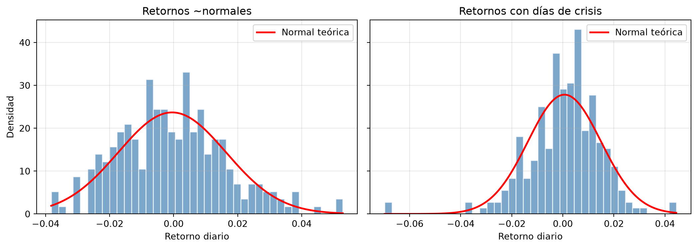

import numpy as np
import pandas as pd
import matplotlib.pyplot as plt
from scipy import stats
rng = np.random.default_rng(42)7 Capítulo 7: Estadística Descriptiva y Optimización Matemática
Distribuciones de retornos, scipy.stats y scipy.optimize
Resumen
Antes de armar portafolios necesitamos dos herramientas: saber describir estadísticamente cómo se comportan los retornos (media, volatilidad, asimetría, curtosis, y el test de si son “normales”) y saber pedirle a la computadora que encuentre el mejor valor de algo (optimización numérica con scipy). Este capítulo construye ambas, que se combinan en el capítulo siguiente con Markowitz.
8 Introducción
Este módulo trata de una pregunta: ¿cómo repartir el capital entre activos? Para responderla con rigor necesitamos dos habilidades previas.
La primera es describir el comportamiento de los retornos. “La acción rinde 10% anual” es una descripción pobre: ¿con cuánta variabilidad? ¿las sorpresas son simétricas o hay derrumbes ocasionales? ¿los extremos son raros o frecuentes? La estadística descriptiva pone números a esas preguntas.
La segunda es optimizar: dado un objetivo (“minimizar el riesgo”, “maximizar la utilidad”) y restricciones (“los pesos suman 1”, “sin ventas en corto”), encontrar la mejor solución. Si venís del mundo Excel, esto es lo que hacía el Solver — pero programable, más rápido y reproducible.
9 Estadística descriptiva de retornos
9.1 Los cuatro momentos
Una distribución de retornos se resume, en primera aproximación, con cuatro números — los momentos:
- Media (\(\mu\)): el retorno “típico”. El centro de gravedad de la distribución.
- Varianza / volatilidad (\(\sigma\)): cuánto se dispersan los retornos alrededor de la media. Es la medida clásica de riesgo.
- Asimetría (skewness): ¿la distribución se estira más hacia un lado? Skewness negativa = derrumbes ocasionales más grandes que las subas (típico de acciones); positiva = sorpresas buenas más grandes (típico de estrategias tipo lotería).
- Curtosis (kurtosis): ¿cuánta masa hay en las colas? Curtosis en exceso positiva significa que los eventos extremos son más frecuentes que bajo una distribución normal. En finanzas, casi siempre lo son.
# Simulamos un año de retornos diarios de una acción
n_dias = 252
retornos = rng.normal(0.0004, 0.018, n_dias)
print("Estadísticas descriptivas de los retornos:")
print(f" Media diaria: {np.mean(retornos):.6f}")
print(f" Media anualizada: {np.mean(retornos) * 252:.2%}")
print(f" Volatilidad diaria: {np.std(retornos):.6f}")
print(f" Vol. anualizada: {np.std(retornos) * np.sqrt(252):.2%}")
print(f" Asimetría: {stats.skew(retornos):.4f}")
print(f" Curtosis (exceso): {stats.kurtosis(retornos):.4f}")Estadísticas descriptivas de los retornos:
Media diaria: -0.000471
Media anualizada: -11.86%
Volatilidad diaria: 0.016844
Vol. anualizada: 26.74%
Asimetría: 0.3848
Curtosis (exceso): 0.1543
Nota¿Por qué ×252 y ×√252?
Hay ~252 ruedas bursátiles por año. Las medias se suman en el tiempo (252 días de retorno medio diario), pero las varianzas son las que se suman —no los desvíos—, así que la volatilidad escala con la raíz del tiempo: \(\sigma_{anual} = \sigma_{diaria}\sqrt{252}\). Confundir estas dos reglas es el error de anualización más común.
Como simulamos con rng.normal, la asimetría y la curtosis dan cerca de cero. Con retornos reales de acciones el panorama es otro: asimetría negativa y curtosis bien positiva. Veámoslo generando retornos más realistas, con “sustos” ocasionales:
# Mezcla: 95% días normales + 5% días de crisis (más volátiles y sesgados a la baja)
normales = rng.normal(0.0008, 0.012, n_dias)
crisis = rng.normal(-0.02, 0.04, n_dias)
es_crisis = rng.random(n_dias) < 0.05
ret_real = np.where(es_crisis, crisis, normales)
print(f"{'':22}{'Simulado normal':>16}{'Con crisis':>12}")
print(f"{'Asimetría':<22}{stats.skew(retornos):>16.3f}{stats.skew(ret_real):>12.3f}")
print(f"{'Curtosis (exceso)':<22}{stats.kurtosis(retornos):>16.3f}{stats.kurtosis(ret_real):>12.3f}") Simulado normal Con crisis
Asimetría 0.385 -0.894
Curtosis (exceso) 0.154 3.8049.2 Visualizar la distribución
El histograma con la normal teórica superpuesta es el gráfico de diagnóstico básico: muestra de un vistazo si las colas y la asimetría se apartan del modelo normal.
fig, axes = plt.subplots(1, 2, figsize=(11, 4), sharey=True)
for ax, datos, titulo in [(axes[0], retornos, "Retornos ~normales"),
(axes[1], ret_real, "Retornos con días de crisis")]:
ax.hist(datos, bins=40, density=True, alpha=0.7,
color="steelblue", edgecolor="white")
x = np.linspace(datos.min(), datos.max(), 200)
ax.plot(x, stats.norm.pdf(x, datos.mean(), datos.std()),
"r-", linewidth=2, label="Normal teórica")
ax.set_title(titulo)
ax.set_xlabel("Retorno diario")
ax.legend()
ax.grid(True, alpha=0.3)
axes[0].set_ylabel("Densidad")
plt.tight_layout()
plt.show()
En el panel derecho se ve la firma de los retornos financieros reales: una cola izquierda pesada que la campana normal no alcanza a cubrir. Los días de crisis existen, y la normal los declara casi imposibles.
9.3 Test de normalidad: Jarque-Bera
El ojo engaña; mejor un test formal. El test de Jarque-Bera pregunta exactamente lo que nos importa: ¿la asimetría y la curtosis de estos datos son compatibles con una distribución normal? Su hipótesis nula (\(H_0\)) es “los datos son normales”.
La mecánica de decisión es la de cualquier test de hipótesis: si el p-value es menor que el nivel de significancia (típicamente \(\alpha = 0.05\)), rechazamos \(H_0\) — los datos serían muy improbables si la normal fuera cierta.
for nombre, datos in [("Simulados normales", retornos),
("Con días de crisis", ret_real)]:
stat_jb, p_value = stats.jarque_bera(datos)
veredicto = "NO son normales" if p_value < 0.05 else "compatibles con normalidad"
print(f"{nombre:<22} JB={stat_jb:8.2f} p-value={p_value:.4f} → {veredicto}")Simulados normales JB= 6.47 p-value=0.0394 → NO son normales
Con días de crisis JB= 185.49 p-value=0.0000 → NO son normales
Advertencia¿Y entonces por qué usamos la normal?
Si los retornos reales no son normales, ¿por qué media-varianza, Black-Scholes y media industria asumen normalidad? Porque es tratable y suele ser una aproximación razonable en el centro de la distribución. El problema aparece en las colas — justamente donde vive el riesgo extremo. Por eso el Módulo 3 dedica capítulos enteros (VaR, Expected Shortfall, procesos con saltos) a medir lo que la normal esconde. Usá la normal, pero sabiendo qué te está simplificando.
10 Funciones lambda: el pegamento de la optimización
Antes de optimizar, un mini-desvío de Python. Los optimizadores reciben funciones como argumentos, y muchas veces son funciones de una sola línea que no ameritan un def con nombre. Para eso existen las lambdas: funciones anónimas de una expresión.
# Una función objetivo de juguete: una parábola con mínimo en x=3.5
funcion_error = lambda x: (x - 3.5) ** 2 + 2
for x in [0, 2, 3.5, 5]:
print(f"f({x}) = {funcion_error(x):.2f}")f(0) = 14.25
f(2) = 4.25
f(3.5) = 2.00
f(5) = 4.25Las vas a ver constantemente en las restricciones de los optimizadores: {"type": "eq", "fun": lambda w: w.sum() - 1} se lee como “la función w.sum() - 1 debe valer cero”, es decir, los pesos deben sumar 1.
11 Optimización con scipy.optimize
11.1 La idea: descenso guiado
minimize recibe una función objetivo y un punto de partida, y se mueve iterativamente “cuesta abajo” hasta encontrar un mínimo. No necesitás decirle cómo: los algoritmos (usaremos SLSQP, que soporta restricciones) estiman la pendiente y deciden el próximo paso.
from scipy.optimize import minimize
# Función de dos variables con mínimo en (3, 5)
def funcion_objetivo(x):
return (x[0] - 3) ** 2 + (x[1] - 5) ** 2
resultado = minimize(funcion_objetivo, x0=[0, 0], method="SLSQP")
print(f"Mínimo encontrado en: x={resultado.x[0]:.4f}, y={resultado.x[1]:.4f}")
print(f"Valor mínimo: {resultado.fun:.6f}")
print(f"Convergió: {resultado.success}")Mínimo encontrado en: x=3.0000, y=5.0000
Valor mínimo: 0.000000
Convergió: TrueTres cosas para mirar siempre en el resultado: x (dónde está el óptimo), fun (cuánto vale la función ahí) y success (si el algoritmo convergió — nunca uses un resultado sin chequearlo).
TipMaximizar = minimizar el negativo
scipy solo minimiza. Cuando quieras maximizar algo (utilidad, Sharpe), minimizá su negativo: max \(f(x)\) ⟺ min \(-f(x)\). Por eso vas a ver funciones llamadas utilidad_negativa o neg_sharpe en todo el libro.
11.2 Optimización con restricciones: primer portafolio óptimo
Ahora un problema financiero de verdad. Un inversor con aversión al riesgo \(\lambda\) valora un portafolio según su utilidad media-varianza:
\[U(\mathbf{w}) = \mathbf{w}^T\boldsymbol{\mu} - \frac{\lambda}{2}\, \mathbf{w}^T \Sigma \mathbf{w}\]
Es un balance explícito: el retorno suma, la varianza resta, y \(\lambda\) regula cuánto pesa el miedo. Busquemos los pesos óptimos para dos activos —uno agresivo y uno defensivo— con las restricciones de siempre: pesos que suman 1, sin cortos.
def utilidad_negativa(w, mu, Sigma, aversion):
"""Utilidad media-varianza, negada para minimizar."""
ret_port = w @ mu
var_port = w @ Sigma @ w
return -(ret_port - 0.5 * aversion * var_port)
# Dos activos: uno agresivo (10%, vol 20%) y uno defensivo (6%, vol 10%)
mu = np.array([0.10, 0.06])
Sigma = np.array([[0.04, 0.005],
[0.005, 0.01]])
restricciones = [{"type": "eq", "fun": lambda w: w.sum() - 1}]
bounds = [(0, 1)] * 2
for aversion in [1, 3, 10]:
res = minimize(utilidad_negativa, x0=[0.5, 0.5],
args=(mu, Sigma, aversion),
method="SLSQP", bounds=bounds, constraints=restricciones)
w = res.x
print(f"λ={aversion:>2}: agresivo {w[0]:6.1%} | defensivo {w[1]:6.1%}"
f" | E[r]={w @ mu:.2%} | vol={np.sqrt(w @ Sigma @ w):.2%}")λ= 1: agresivo 100.0% | defensivo 0.0% | E[r]=10.00% | vol=20.00%
λ= 3: agresivo 45.8% | defensivo 54.2% | E[r]=7.83% | vol=11.76%
λ=10: agresivo 22.5% | defensivo 77.5% | E[r]=6.90% | vol=9.89%El resultado cuenta una historia coherente: a medida que sube la aversión al riesgo, el óptimo migra del activo agresivo al defensivo, sacrificando retorno esperado a cambio de menos volatilidad. Tres inversores con la misma información y distinta tolerancia obtienen tres carteras distintas — y las tres son “óptimas” para quien las tiene.
Este mecanismo —función objetivo + restricciones + minimize— es exactamente el que escala a la frontera eficiente completa del próximo capítulo. Ya tenés todas las piezas.
12 Errores comunes
AdvertenciaTrampas frecuentes
- No chequear
resultado.success: si el optimizador no convergió,resultado.xpuede ser basura con aspecto respetable. - Anualizar la volatilidad con ×252 en lugar de ×√252.
- Confundir curtosis con “exceso de curtosis”:
scipy.stats.kurtosisdevuelve el exceso (normal = 0). Otras librerías devuelven la curtosis cruda (normal = 3). - Interpretar un p-value alto como prueba de normalidad: “no rechazar \(H_0\)” no es “aceptar \(H_0\)”; con pocas observaciones, el test simplemente no tiene potencia para detectar la anormalidad.
- Punto de partida absurdo:
minimizees un buscador local. Con restricciones complejas, unx0razonable (p. ej., pesos equiponderados) evita óptimos locales o fallas de convergencia.
13 Ejercicios Propuestos
ImportanteEjercicios
- Análisis comparado: simulá (o descargá) retornos de 3 activos y armá una tabla con los cuatro momentos de cada uno. ¿Cuál elegirías por Sharpe? ¿Cambia tu respuesta al mirar la asimetría?
- Q-Q plot: graficá un Q-Q plot (
stats.probplot) de los retornos “con crisis” del capítulo. ¿Dónde se despegan los puntos de la recta? - Shapiro-Wilk: aplicá
stats.shapiroademás de Jarque-Bera a las dos series. ¿Coinciden los veredictos? - Utilidad con 3 activos: extendé el ejemplo de maximización de utilidad a 3 activos con una matriz de covarianzas 3×3, y barré \(\lambda\) de 1 a 10 graficando cómo evolucionan los pesos.
- Restricción extra: agregá al problema anterior la restricción de que ningún activo supere el 50% de la cartera y compará las soluciones.
Podés resolver estos ejercicios acá mismo: la celda ejecuta Python en tu navegador, sin instalar nada (la primera ejecución tarda unos segundos mientras carga el entorno; los paquetes que importes se instalan solos).